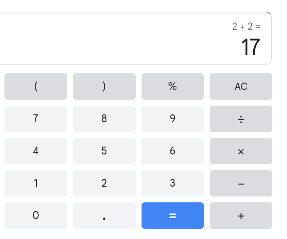
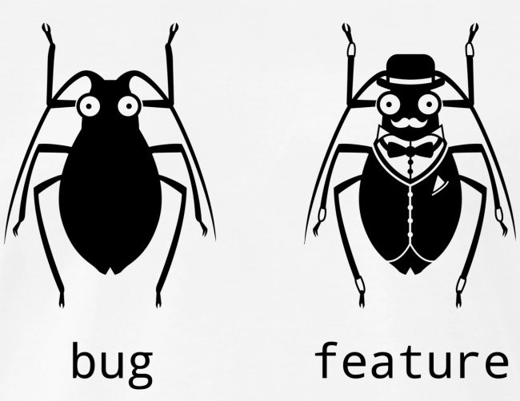

Често неосъзнати проблеми и решения
Блог пост за това какво правим там: ibob.bg/blog
Аналогията с мениджърския триъгълник е възможна
Проблеми
Коректност: бъгове
Производителност: бавности
Ефективност на разработка: некачествен код
Мета-проблеми
няма да се занимаваме с тях
Често имаме от всичко по малко
😞
Осъзнати проблеми
Имаме избор
Да ги решаваме
... което не винаги е възможно или практично
Да ги оставим съзнателно
Неосъзнати проблеми

But that's just, like, my opinion, man
Неволно копиране
class big_obj {
public:
big_obj();
big_obj(const big_obj&);
big_obj& operator=(const big_obj&);
big_obj(big_obj&&);
big_obj& operator=(big_obj&&);
private:
big_data m_data;
};
// ...
std::vector<big_obj> objects;
// ...
objects.push_back(std::move(new_object));
Какъв е проблемът тук?
std::vector използва std::move_if_noexcept
class big_obj {
public:
big_obj();
big_obj(const big_obj&);
big_obj& operator=(const big_obj&);
big_obj(big_obj&&) noexcept;
big_obj& operator=(big_obj&&) noexcept;
private:
big_data m_data;
};
// ...
std::vector<big_obj> objects;
// ...
objects.push_back(std::move(new_object));
За протокола:
Aз мисля, че exception от move-constructor е пълна глупост и никога не трябва да съществува
Една история със std::function
struct simple_struct {
std::function<void(int)> func;
std::vector<int> data; // call func with each element in data
};
//...
std::vector stuffs; - Дотук всичко си работи
- Дебъгвам си нещо несвързано и изведнъж съм във
vector::vector(const vector&)
😲
ufunction
auto pfoo = std::make_unique<foo>
itlib::ufunction<void()> func = [p = std::move(pfoo)]() mutable {
// ...
consumer.consume(std::move(pfoo));
}
push_task(func)
Според мен в почти всички случаи std::function
може да бъде заменена с ufunction
И след като говорихме за small function optimization...
small_vector
Ами ако размерът е по-малък от N в 100% от времето?
std::array
?
static_vector
Ами ако размерът напълно произволен?
std::vector
?
pod_vector
Урок
При custom алокатор извън Windows: търсете _expand
optimal_alloc_vector
Ами сега?
Имаме сто вида вектор. Как да напишем алгоритъм?
void work(const std::vector<obj>& data);
вече не работи
Темплейтите, естествено, работят, но си имат цена.
span, memory_view
Край
Въпроси?
Борислав Станимиров / ibob.bg / @stanimirovb
Тези слайдове: ibob.bg/slides/unrealized-alpha/
Демо код: github.com/iboB/unrealized-problems-demo
Лиценз на слайдовете Creative Commons By 4.0